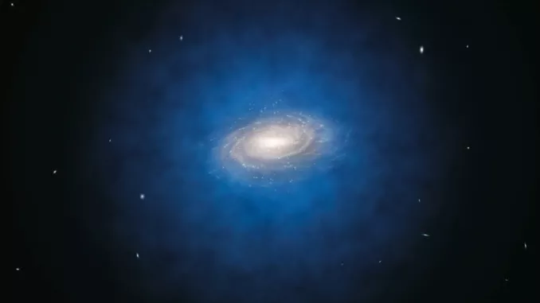

Calculating the Rotation Curve
To determine a galaxy's rotation curve, we utilize Doppler spectroscopy by analyzing starlight at various distances from the galactic center. This allows us to establish the rotation velocity as a function of radius, known as the galaxy's rotation curve. Initially, assuming the galaxy to be a point mass, we would expect the rotation velocity to decrease with increasing radius, similar to a planet orbiting a star. However, real galaxies are not dominated by a central point mass like a star. Instead, we must consider the gravitational force exerted by the entire mass distribution within the galaxy. This introduces complexity, but Newton's theory enables us to simplify the problem by treating the interior mass as if it were concentrated at the center, yielding a comparable solution to the more intricate scenario of a spatially extended mass distribution.
Newton’s Theorem and Disk Galaxies
When dealing with disk galaxies, Newton's theorem for spherical mass distributions does not apply due to their flat shape. The formula for the rotation curve in a disk galaxy becomes more complex, involving integrals with modified Bessel functions. However, instead of solving this intricate equation, physicists often make the assumption that the galaxy can be treated as a sphere, trusting that the general behavior will be similar, even if the details differ. To describe the mass distribution in a disk galaxy, a function M-sub-r is used, representing the total mass enclosed within a sphere of radius r. As r increases, M-sub-r also increases until it levels off to a constant value, the total mass of the galaxy, when enclosing all the mass. By replacing the constant M in the previous result with the function M-sub-r, the velocity of an orbiting star can be determined using Newton's theorem.
The Dark Matter Halo
In the 1970s, measurements of galaxy rotation curves got more accurate and extended to larger r. Nearly everyone expected that M-sub-r would level off, once r was larger than about 10 kiloparsecs, outside the visible disk of stars. That far away, M-sub-r should stop increasing, and the rotation velocity should start declining as one over root r. But that’s not what was observed. Instead, V was found to keep rising! In many galaxies, it levels off to a constant value, but it doesn’t go down, even well outside the disk!
The observed constant rotation velocity (V) in galaxies leads to the inference that the enclosed mass (M-sub-r) also increases proportionally to the distance (r). This suggests the presence of dark matter. Further detailed analyses using the most reliable data indicate that dark matter forms a nearly spherical mass distribution, extending over hundreds of kiloparsecs. This implies that a spiral galaxy is akin to a small object orbiting within a significantly larger and more massive structure known as the dark matter halo.
Dark Matter
The nature of dark matter remains one of the most significant unsolved mysteries in astrophysics. Despite extensive efforts to detect it through means other than gravitational influence, astronomers and physicists have been unsuccessful. Theoretical explorations have considered various forms of matter that could potentially evade detection. Currently, the most favored idea is that dark matter consists of yet undiscovered fundamental particles that interact weakly, or not at all, with normal matter, with the exception of gravity. These hypothetical particles would lack interactions involving electromagnetism and nuclear forces.